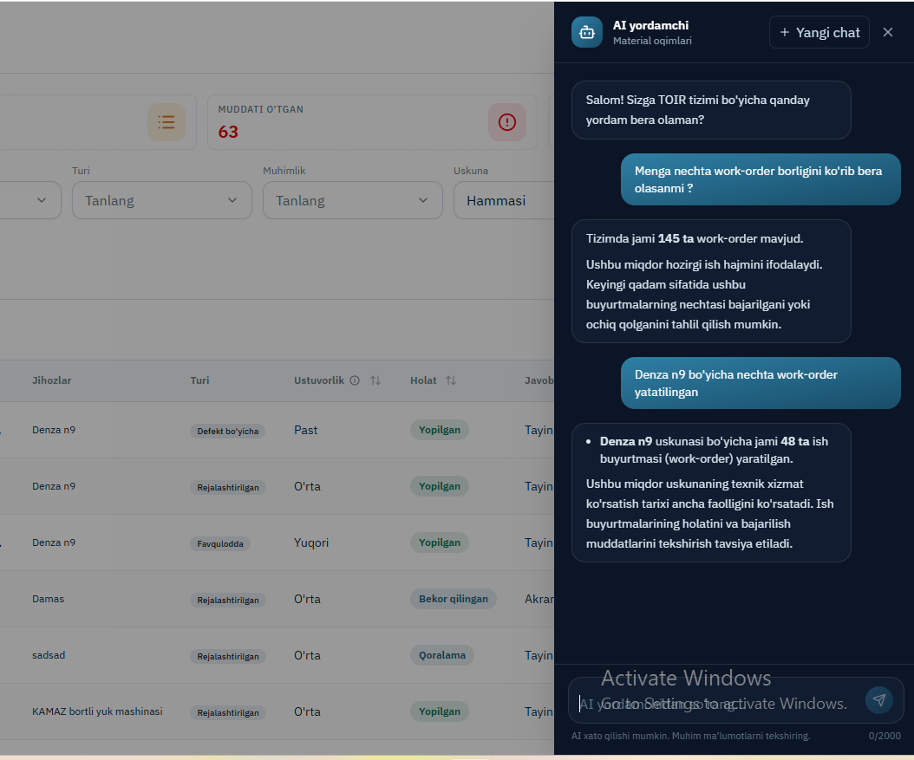
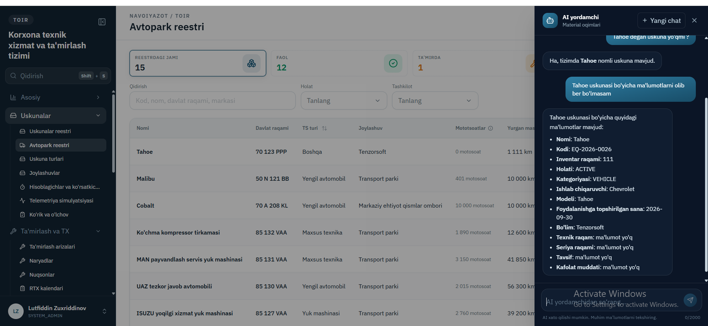
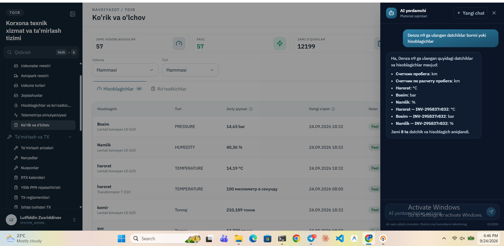

Chatbot
Xodim bazaga oddiy tilda savol beradi. Tizim savolni SQL ga aylantiradi, bazada bajaradi va natijani tushunarli gap qilib qaytaradi.
Maqsad
TOIR bazasida o'nlab jadval bor: uskunalar, ta'mirlash so'rovlari, ehtiyot qismlar, nosozliklar tarixi. Oddiy xodim SQL bilmaydi, hisobot esa har savol uchun alohida yozilmaydi.
Chatbot shu bo'shliqni to'ldiradi: «Denza n9 uchun nechta work order bor?» deb yozish yetarli. Javob har doim bazadagi haqiqiy raqamdan chiqadi — model o'zidan raqam o'ylab topmaydi, topilmasa esa buni ochiq aytadi.
Ishlash WorkFlow
Tugun ustiga bosing — nima qilishi haqida qisqa ma’lumot chiqadi.
Namunalar


